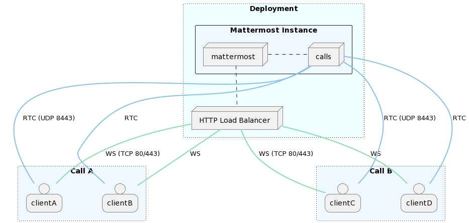
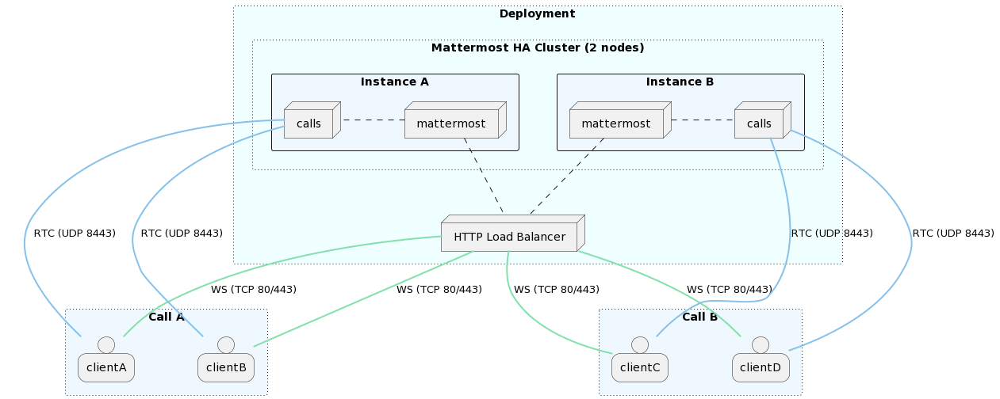
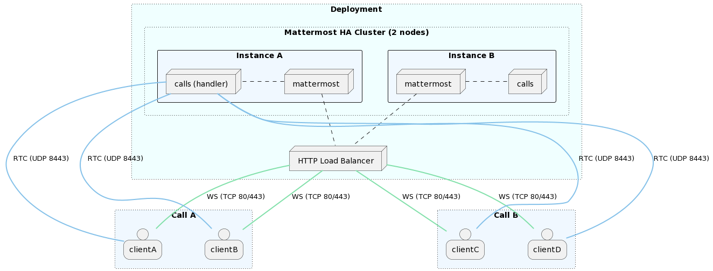

Calls self-hosted deployment#
 Available on all plans
Available on all plans
 Cloud and self-hosted deployments
Cloud and self-hosted deployments
This document provides information on how to successfully make the Calls plugin work on self-hosted deployments. It also outlines some of the most common deployment strategies with example diagrams, and also provides the deployment guidelines for the recording service.
Terminology#
WebRTC: The set of underlying protocols/specifications on top of which calls are implemented.
RTC (Real Time Connection): The real-time connection. This is the channel used to send media tracks (audio/video/screen).
WS (WebSocket): The WebSocket connection. This is the channel used to set up a connection (signaling process).
NAT (Network Address Translation): A networking technique to map IP addresses.
STUN (Session Traversal Utilities for NAT): A protocol/service used by WebRTC clients to help traversing NATs. On the server side it’s mainly used to figure out the public IP of the instance.
TURN (Traversal Using Relays around NAT): A protocol/service used to help WebRTC clients behind strict firewalls connect to a call through media relay.
Plugin components#
Calls plugin: This is the main entry point and a requirement to enable channel calls.
rtcd: This is an optional service that can be deployed to offload all the functionality and data processing involved with the WebRTC connections. Read more about when and why to use rctd below.
Requirements#
Server#
Run Mattermost server on a secure (HTTPs) connection. This is a necessary requirement on the client to allow capturing devices (e.g., microphone, screen). See the config TLS section for more info.
See network requirements below.
Client#
Clients need to be able to connect (send and receive data) to the instance hosting the calls through the UDP port configured as
RTC Server Port. If this is not possible a TURN server should be used to achieve connectivity.Depending on the platform or operating system, clients may need to grant additional permissions to the application (e.g., browser, desktop app) to allow them to capture audio inputs or share the screen.
Network#
Service |
Ports |
Protocols |
Source |
Target |
Purpose |
API (Calls plugin) |
80,443 |
TCP (incoming) |
Mattermost clients (web/desktop/mobile) |
Mattermost instance (Calls plugin) |
To allow for HTTP and WebSocket connectivity from clients to Calls plugin. This API is exposed on the same connection as Mattermost, so there’s likely no need to change anything. |
RTC (Calls plugin or |
8443 |
UDP (incoming) |
Mattermost clients (Web/Desktop/Mobile) |
Mattermost instance or |
To allow clients to establish connections that transport calls related media (e.g. audio, video). This should be open on any network component (e.g. NAT, firewalls) in between the instance running the plugin (or |
RTC (Calls plugin or |
8443 |
TCP (incoming) |
Mattermost clients (Web/Desktop/Mobile) |
Mattermost instance or |
To allow clients to establish connections that transport calls related media (e.g. audio, video). This should be open on any network component (e.g. NAT, firewalls) in between the instance running the plugin (or |
API ( |
8045 |
TCP (incoming) |
Mattermost instance(s) (Calls plugin) |
|
To allow for HTTP/WebSocket connectivity from Calls plugin to |
STUN (Calls plugin or |
3478 |
UDP (outgoing) |
Mattermost Instance(s) (Calls plugin) or |
Configured STUN servers |
(Optional) To allow for either Calls plugin or |
Limitations#
In Mattermost Cloud, up to 200 participants per channel can join a call.
In Mattermost self-hosted deployments, the default maximum number of participants is unlimited. The recommended maximum number of participants per call is 200. This setting can be changed in System Console > Plugin Management > Calls > Max call participants. There’s no limit to the total number of participants across all calls as the supported value greatly depends on instance resources. For more details, refer to the performance section below.
Configuration#
For Mattermost self-hosted customers, the calls plugin is pre-packaged, installed, and enabled. Configuration to allow end-users to use it can be found in the System Console.
Modes of operation#
Depending on how the Mattermost server is running, there are several modes under which the Calls plugin can operate. Please refer to the section below on the rtcd service to learn about the rtcd and the Selective Forwarding Unit (SFU).
Mattermost deployment |
SFU |
SFU deployment |
|---|---|---|
Single instance |
integrated |
|
Single instance |
rtcd |
|
High availability cluster |
integrated |
clustered |
High availability cluster |
integrated |
single handler |
High availability cluster |
rtcd |
Single instance#
Integrated#
This is the default mode when first installing the plugin on a single Mattermost instance setup. The WebRTC service is integrated in the plugin itself and runs alongside the Mattermost server.
rtcd#
An external, dedicated and scalable WebRTC service (rtcd) is used to handle all calls media routing.
High availability cluster#
Clustered#
This is the default mode when running the plugin in a high availability cluster. Every Mattermost node will run an instance of the plugin that includes a WebRTC service. Calls are distributed across all available nodes through the existing load-balancer: a call is hosted on the instance where the initiating websocket connection (first client to join) is made. A single call will be hosted on a single cluster node.
Single handler#
This is a fallback mode to only let one node in the cluster to host calls. While the plugin would still run on all nodes, all calls will be routed through the handler node. This mode must be enabled by running the instance with a special environment variable set (MM_CALLS_IS_HANDLER=true).
rtcd (HA)#

Performance#
Calls performance primarily depends on two resources: CPU and bandwidth (both network latency and overall throughput). The final consumption exhibits quadratic growth with the number of clients transmitting and receiving media.
As an example, a single call with 10 participants of which two are unmuted (transmitting voice data) will generally consume double the resources than the same call with a single participant unmuted. What ultimately counts towards performance is the overall number of concurrent media flows (in/out) across the server.
Benchmarks#
Here are some results from internally conducted performance tests on a dedicated rtcd instance:
Calls |
Users/call |
Unmuted/call |
Screen sharing |
CPU (avg) |
Memory (avg) |
Bandwidth (in/out) |
Instance (EC2) |
|---|---|---|---|---|---|---|---|
100 |
8 |
2 |
no |
60% |
0.5GB |
22Mbps / 125Mbps |
c6i.xlarge |
100 |
8 |
2 |
no |
30% |
0.5GB |
22Mbps / 125Mbps |
c6i.2xlarge |
100 |
8 |
2 |
yes |
86% |
0.7GB |
280Mbps / 2.2Gbps |
c6i.2xlarge |
10 |
50 |
2 |
no |
35% |
0.3GB |
5.25Mbps / 86Mbps |
c6i.xlarge |
10 |
50 |
2 |
no |
16% |
0.3GB |
5.25Mbps / 86Mbps |
c6i.2xlarge |
10 |
50 |
2 |
yes |
90% |
0.3GB |
32Mbps / 1.33Gbps |
c6i.xlarge |
10 |
50 |
2 |
yes |
45% |
0.3GB |
32Mbps / 1.33Gbps |
c6i.2xlarge |
5 |
200 |
2 |
no |
65% |
0.6GB |
8.2Mbps / 180Mbps |
c6i.xlarge |
5 |
200 |
2 |
no |
30% |
0.6GB |
8.2Mbps / 180Mbps |
c6i.2xlarge |
5 |
200 |
2 |
yes |
90% |
0.7GB |
31Mbps / 2.2Gbps |
c6i.2xlarge |
Dedicated service#
For Enterprise customers we offer a way to offload performance costs through a dedicated service that can be used to further scale up calls.
Load testing#
We provide a load-test tool that can be used to simulate and measure the performance impact of calls.
Monitoring#
Both the plugin and the external rtcd service expose some Prometheus metrics to monitor performance. We provide an official dashboard that can be imported in Grafana. You can refer to Performance monitoring for more information on how to set up Prometheus and visualize metrics through Grafana.
Calls plugin metrics#
Metrics for the calls plugin are exposed through the public /plugins/com.mattermost.calls/metrics API endpoint.
Process
mattermost_plugin_calls_process_cpu_seconds_total: Total user and system CPU time spent in seconds.mattermost_plugin_calls_process_max_fds: Maximum number of open file descriptors.mattermost_plugin_calls_process_open_fds: Number of open file descriptors.mattermost_plugin_calls_process_resident_memory_bytes: Resident memory size in bytes.mattermost_plugin_calls_process_virtual_memory_bytes: Virtual memory size in bytes.
WebRTC connection
mattermost_plugin_calls_rtc_conn_states_total: Total number of RTC connection state changes.mattermost_plugin_calls_rtc_errors_total: Total number of RTC errors.mattermost_plugin_calls_rtc_rtp_bytes_total: Total number of sent/received RTP packets in bytes.Note: removed as of v0.16.0
mattermost_plugin_calls_rtc_rtp_packets_total: Total number of sent/received RTP packets.Note: removed as of v0.16.0
mattermost_plugin_calls_rtc_rtp_tracks_total: Total number of incoming/outgoing RTP tracks.Note: added as of v0.16.0
mattermost_plugin_calls_rtc_sessions_total: Total number of active RTC sessions.
Database
mattermost_plugin_calls_store_ops_total: Total number of db store operations.
WebSocket
mattermost_plugin_calls_websocket_connections_total: Total number of active WebSocket connections.mattermost_plugin_calls_websocket_events_total: Total number of WebSocket events.
WebRTC service metrics#
Metrics for the rtcd service are exposed through the /metrics API endpoint.
Process
rtcd_process_cpu_seconds_total: Total user and system CPU time spent in seconds.rtcd_plugin_calls_process_max_fds: Maximum number of open file descriptors.rtcd_plugin_calls_process_open_fds: Number of open file descriptors.rtcd_plugin_calls_process_resident_memory_bytes: Resident memory size in bytes.rtcd_plugin_calls_process_virtual_memory_bytes: Virtual memory size in bytes.
WebRTC Connection
rtcd_rtc_conn_states_total: Total number of RTC connection state changes.rtcd_rtc_errors_total: Total number of RTC errors.rtcd_rtc_rtp_bytes_total: Total number of sent/received RTP packets in bytes.Note: removed as of v0.10.0
rtcd_rtc_rtp_packets_total: Total number of sent/received RTP packets.Note: removed as of v0.10.0
rtcd_rtc_rtp_tracks_total: Total number of incoming/outgoing RTP tracks.Note: added as of v0.10.0
rtcd_rtc_sessions_total: Total number of active RTC sessions.
WebSocket
rtcd_ws_connections_total: Total number of active WebSocket connections.rtcd_ws_messages_total: Total number of received/sent WebSocket messages.
System tunings#
If you want to host many calls or calls with a large number of participants, take a look at the following platform specific (Linux) tunings (this is the only officially supported target for the plugin right now):
# Setting the maximum buffer size of the receiving UDP buffer to 16MB
net.core.rmem_max = 16777216
# Setting the maximum buffer size of the sending UDP buffer to 16MB
net.core.wmem_max = 16777216
# Allow to allocate more memory as needed for more control messages that need to be sent for each socket connected
net.core.optmem_max = 16777216
The rtcd service#
Note
 The rtcd service is available only on Enterprise plans
The rtcd service is available only on Enterprise plans
The Calls plugin has a built-in Selective Forwarding Unit (SFU) to route audio and screensharing data. This is the integrated option described in the #modes-of-operation section above. But this SFU functionality can be deployed separately as an external rtcd instance.
Reasons to use the rtcd service#
This section will help you understand when and why your organization would want to use rtcd.
Note
rtcd is a standalone service, which adds operational complexity, maintenance costs, and requires an enterprise licence. For those who are evaluating Calls, and for many small instances of Mattermost, the integrated SFU (the one included in the Calls plugin) may be sufficient initially.
The rtcd service is the recommended way to host Calls for the following reasons:
Performance of the main Mattermost server(s). When the Calls plugin runs the SFU, calls traffic is added to the processing load of the server running the rest of your Mattermost services. If Calls traffic spikes, it can negatively affect the responsiveness of these services. Using an rtcd service isolates the calls traffic processing to those rtcd instances, and also reduces costs by minimizing CPU usage spikes.
Performance, scalability, and stability of the Calls product. If Calls traffic spikes, or more overall capacity is needed,
rtcdservers can be added to balance the load. As an added benefit, if the Mattermost traffic spikes, or if a Mattermost instance needs to be restarted, those people in a current call will not be affected - current calls won’t be dropped.
Some caveats apply here. Web socket events (for example: emoji reactions, hand raising, muting/unmuting) will not be transmitted while the main Mattermost server is down. But the call itself will continue while the main server restarts.
Kubernetes deployments. In a Kubernetes deployment,
rtcdis strongly recommended; it is currently the only officially supported way to run Calls.Technical benefits. The dedicated
rtcdservice has been optimized and tuned at the system/network level for real-time audio/video traffic, where latency is generally more important than throughput.
In general, rtcd is the preferred solution for a performant and scalable deployment. With rtcd, the Mattermost server will be minimally impacted when hosting a high number of calls.
Horizontal scalability#
The supported way to enable horizontal scalability for Calls is through a form of DNS based load balancing. This can be achieved regardless of how the rtcd service is deployed (bare bone instance, Kubernetes, or an alternate way).
In order for this to work, the RTCD Service URL should point to a hostname that resolves to multiple IP addresses, each pointing to a running rtcd instance. The Mattermost Calls plugin will then automatically distribute calls amongst the available hosts.
The expected requirements are the following:
When a new
rtcdinstance is deployed, it should be added to the DNS record. The plugin side will then be able to pick it up and start assigning calls to the new host.If a
rtcdinstance goes down, it should be removed from the DNS record. The plugin side can then detect the change and stop assigning new calls to that host.
Note
Load balancing is done at the call level. This means that a single call will always live on a single rtcd instance.
There’s currently no support for spreading sessions belonging to the same call across a fleet of instances.
Configure recording#
Before you can start recording calls, you need to configure the calls-offloader job service. You can read about how to do that here. Performance and scalability recommendations related to this service can be found in here.
Note
If deploying the service in a Kubernetes cluster, refer to the later section on Helm charts.
Once the calls-offloader service is running, recordings should be explicitly enabled through the Enable call recordings config setting and the service’s URL should be configured using Job service URL.
Kubernetes deployments#
The Calls plugin has been designed to integrate well with Kubernetes to offer improved scalability and control over the deployment.
This is a sample diagram showing how the rtcd standalone service can be deployed in a Kubernetes cluster:

If Mattermost isn’t deployed in a Kubernetes cluster, and you want to use this deployment type, visit the Kubernetes operator guide.
Helm Charts#
The recommended way to deploy Calls related components and services in a Kubernetes deployment is to use the officially provided Helm charts. Related documentation including detailed information on how to deploy these services can be found in our mattermost-helm repository:
Frequently asked questions#
Is there encryption?#
Media (audio/video) is encrypted using security standards as part of WebRTC. It’s mainly a combination of DTLS and SRTP. It’s not e2e encrypted in the sense that in the current design all media needs to go through Mattermost which acts as a media router and has complete access to it. Media is then encrypted back to the clients so it’s secured during transit. In short: only the participant clients and the Mattermost server have access to unencrypted call data.
Are there any third-party services involved?#
The only external service used is a Mattermost official STUN server (stun.global.calls.mattermost.com) which is configured as default. This is primarily used to find the public address of the Mattermost instance if none is provided through the ICE Host Override option. The only information sent to this service is the IP addresses of clients connecting as no other traffic goes through it. It can be removed in cases where the ICE Host Override setting is provided.
Is using UDP a requirement?#
Yes, UDP is the recommended protocol to serve real-time media as it allows for the lowest latency between peers. However, there are a couple of possible solutions to cover clients that due to limitations or strict firewalls are unable to use UDP:
Since plugin version 0.17 and
rtcdversion 0.11 the RTC service will listen for TCP connections in addition to UDP ones. If configured correctly (e.g. using commonly allowed ports such as 80 or 443) it’s possible to have clients connect directly through TCP when unable to do it through the preferred UDP channel.Run calls through an external TURN server that listens on TCP and relays all media traffic between peers. However, this is a sub-optimal solution that should be avoided if possible as it will introduce extra latency along with added infrastructural cost.
Do I need a TURN server?#
TURN becomes necessary when you expect to have clients that are unable to connect through the configured UDP port. This can happen due to very restrictive firewalls that either block non standard ports even in the outgoing direction or don’t allow the use of the UDP protocol altogether (e.g. some corporate firewalls). In such cases TURN is needed to allow connectivity.
We officially support and recommend using coturn for a stable and performant TURN service implementation.
How will this work with an existing reverse proxy sitting in front of Mattermost?#
Generally clients should connect directly to either Mattermost or, if deployed, the dedicated rtcd service through the configured UDP port . However, it’s also possible to route the traffic through an existing load balancer as long as this has support for routing the UDP protocol (e.g. nginx). Of course this will require additional configuration and potential changes to how the plugin is run as it won’t be possible to load balance the UDP flow across multiple instances like it happens for HTTP.
Do calls require a dedicated server to work or can they run alongside Mattermost?#
The plugin can function in different modes. By default calls are handled completely by the plugin which runs as part of Mattermost. It’s also possible to use a dedicated service to offload the computational and bandwidth costs and scale further (Enterprise only).
Can the traffic between Mattermost and rtcd be kept internal or should it be opened to the public?#
When possible, it’s recommended to keep communication between the Mattermost cluster and the dedicated rtcd service under the same private network as this can greatly simplify deployment and security. There’s no requirement to expose rtcd’s HTTP API to the public internet.
Troubleshooting#
Connectivity issues#
If calls are failing to connect or timing out, it’s likely the RTC Server Port is not open or forwarded correctly. An easy way to check whether data can go through is to perform some tests using the netcat command line tool.
On the host running Calls (could be the Mattermost instance itself or the one running rtcd depending on the chosen setup), run the following:
nc -l -u -p 8443
On the client side (i.e., the machine you would normally use to run the Mattermost desktop app or browser), run the following:
nc -v -u HOST_IP 8443
If connection succeeds, you should be able to send and receive text messages by typing and hitting enter on either side.
Note
HOST_IP should generally be the public (client facing) IP of the Mattermost
(or rtcd) instance hosting the calls. When set, it should be the value of the ICE Host Override
config setting.
8443 should be changed with the port configured in RTC Server Port.